Importance Sampling Examples¶
from qmcpy import *
from numpy import *
import pandas as pd
pd.options.display.float_format = '{:.2e}'.format
from matplotlib import pyplot as plt
import matplotlib
%matplotlib inline
plt.rc('font', size=16)
plt.rc('axes', titlesize=16)
plt.rc('axes', labelsize=16)
plt.rc('xtick', labelsize=16)
plt.rc('ytick', labelsize=16)
plt.rc('legend', fontsize=16)
plt.rc('figure', titlesize=16)
Game Example¶
Consider a game where 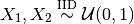 are drawn with a payoff of
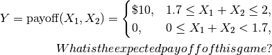
payoff = lambda x: 10*(x.sum(1)>1.7)
abs_tol = 1e-3
Vanilla Monte Carlo¶
With ordinary Monte Carlo we do the following:
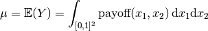
distribution = Lattice(2)
measure = Uniform(distribution)
integral = QuickConstruct(measure,payoff)
solution1,data1 = CubLattice_g(integral, abs_tol).integrate()
data1
Solution: 0.4500
QuickConstruct (Integrand Object)
Lattice (DiscreteDistribution Object)
dimension 2
scramble 1
seed None
backend gail
mimics StdUniform
Uniform (TrueMeasure Object)
distrib_name Lattice
lower_bound [0 0]
upper_bound [1 1]
CubLattice_g (StoppingCriterion Object)
abs_tol 0.001
rel_tol 0
n_init 1024
n_max 34359738368
CubatureData (AccumulateData Object)
n_total 65536
solution 0.450
r_lag 4
time_integrate 0.070
Monte Carlo with Importance Sampling¶
We may add the importance sampling to increase the number of samples with positive payoffs. Let
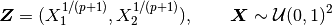
This means that 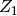 and 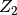 are IID with common CDF 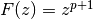 and common PDF 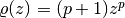.Thus,
p = 1
distribution = Lattice(2)
measure = Uniform(distribution)
integral = QuickConstruct(measure,lambda x: payoff(x**(1/(p+1))) / ((p+1)**2 * (x.prod(1))**(p/(p+1))))
solution2,data2 = CubLattice_g(integral, abs_tol).integrate()
data2
Solution: 0.4501
QuickConstruct (Integrand Object)
Lattice (DiscreteDistribution Object)
dimension 2
scramble 1
seed None
backend gail
mimics StdUniform
Uniform (TrueMeasure Object)
distrib_name Lattice
lower_bound [0 0]
upper_bound [1 1]
CubLattice_g (StoppingCriterion Object)
abs_tol 0.001
rel_tol 0
n_init 1024
n_max 34359738368
CubatureData (AccumulateData Object)
n_total 16384
solution 0.450
r_lag 4
time_integrate 0.036
print('Imporance Sampling takes %.3f the time and %.3f the samples'%\
(data2.time_integrate/data1.time_integrate,data2.n_total/data1.n_total))
Imporance Sampling takes 0.507 the time and 0.250 the samples
Asian Call Option Example¶
The stock price must raise significantly for the payoff to be positive. So we will give a upward drift to the Brownian motion that defines the stock price path. We can think of the option price as the multidimensional integral
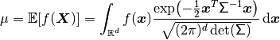
where
We will replace 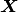 by
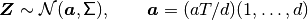
where a positive 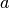 will create more positive payoffs. This corresponds to giving our Brownian motion a drift. To do this we re-write the integral as
Finally note that
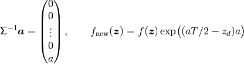
This drift in the Brownian motion may be implemented by changing the
mean_shift_is input to the BrownianMotion object.
abs_tol = 1e-2
dimension = 32
def plt_bm_is(measure):
n_plt = 32
samples = measure.gen_mimic_samples(n_min=0,n_max=n_plt)
fig,ax = plt.subplots()
for i in range(n_plt): ax.plot(measure.time_vector,samples[i])
ax.set_xlabel('time')
ax.set_ylabel('option price')
ax.set_title('Brownian Motion with Mean Shift %.1f'%measure.mean_shift_is)
plt.show()
Vanilla Monte Carlo¶
distribution = Sobol(dimension)
measure = BrownianMotion(distribution)
integrand = AsianCall(measure)
solution1,data1 = CubSobol_g(integrand, abs_tol).integrate()
data1
Solution: 1.7816
AsianCall (Integrand Object)
volatility 0.500
start_price 30
strike_price 35
interest_rate 0
mean_type arithmetic
dimensions 32
dim_fracs 0
Sobol (DiscreteDistribution Object)
dimension 32
scramble 1
seed 839435032
backend qrng
mimics StdUniform
BrownianMotion (TrueMeasure Object)
distrib_name Sobol
time_vector [ 0.031 0.062 0.094 ... 0.938 0.969 1.000]
CubSobol_g (StoppingCriterion Object)
abs_tol 0.010
rel_tol 0
n_init 1024
n_max 34359738368
CubatureData (AccumulateData Object)
n_total 16384
solution 1.782
r_lag 4
time_integrate 0.176
plt_bm_is(measure)
Monte Carlo with Importance Sampling¶
mean_shift_is = 1
distribution = Sobol(dimension)
measure = BrownianMotion(distribution,mean_shift_is)
integrand = AsianCall(measure)
solution2,data2 = CubSobol_g(integrand, abs_tol).integrate()
data2
Solution: 1.8039
AsianCall (Integrand Object)
volatility 0.500
start_price 30
strike_price 35
interest_rate 0
mean_type arithmetic
dimensions 32
dim_fracs 0
Sobol (DiscreteDistribution Object)
dimension 32
scramble 1
seed 2088013629
backend qrng
mimics StdUniform
BrownianMotion (TrueMeasure Object)
distrib_name Sobol
time_vector [ 0.031 0.062 0.094 ... 0.938 0.969 1.000]
CubSobol_g (StoppingCriterion Object)
abs_tol 0.010
rel_tol 0
n_init 1024
n_max 34359738368
CubatureData (AccumulateData Object)
n_total 4096
solution 1.804
r_lag 4
time_integrate 0.033
plt_bm_is(measure)
print('Imporance Sampling takes %.3f the time and %.3f the samples'%\
(data2.time_integrate/data1.time_integrate,data2.n_total/data1.n_total))
Imporance Sampling takes 0.189 the time and 0.250 the samples
Importance Sampling MC vs QMC¶
Test Parameters
dimension = 16
abs_tol = .025
trials = 3
df = pd.read_csv('../outputs/mc_vs_qmc/importance_sampling_compare_mean_shifts.csv')
df['Problem'] = df['Stopping Criterion'] + ' ' + df['Distribution'] + ' (' + df['MC/QMC'] + ')'
df = df.drop(['Stopping Criterion','Distribution','MC/QMC'],axis=1)
problems = ['CLT IIDStdUniform (MC)',
'MeanMC_g IIDStdGaussian (MC)',
'CLTRep Sobol (QMC)',
'CubLattice_g Lattice (QMC)',
'CubSobol_g Sobol (QMC)']
df = df[df['Problem'].isin(problems)]
mean_shifts = df.mean_shift.unique()
df_samples = df.groupby(['Problem'])['n_samples'].apply(list).reset_index(name='n')
df_times = df.groupby(['Problem'])['time'].apply(list).reset_index(name='time')
df.loc[(df.mean_shift==0) | (df.mean_shift==1)].set_index('Problem')
# Note: mean_shift==0 --> NOT using importance sampling
| mean_shift | solution | n_samples | time | |
|---|---|---|---|---|
| Problem | ||||
| CLT IIDStdUniform (MC) | 0.00e+00 | 1.78e+00 | 3.24e+05 | 6.57e-01 |
| CLT IIDStdUniform (MC) | 1.00e+00 | 1.79e+00 | 8.22e+04 | 1.70e-01 |
| MeanMC_g IIDStdGaussian (MC) | 0.00e+00 | 1.79e+00 | 4.82e+05 | 3.36e-01 |
| MeanMC_g IIDStdGaussian (MC) | 1.00e+00 | 1.77e+00 | 1.27e+05 | 1.02e-01 |
| CLTRep Sobol (QMC) | 0.00e+00 | 1.78e+00 | 1.64e+04 | 5.69e-02 |
| CLTRep Sobol (QMC) | 1.00e+00 | 1.79e+00 | 1.64e+04 | 4.91e-02 |
| CubLattice_g Lattice (QMC) | 0.00e+00 | 1.75e+00 | 4.10e+03 | 1.96e-02 |
| CubLattice_g Lattice (QMC) | 1.00e+00 | 1.81e+00 | 1.02e+03 | 5.88e-03 |
| CubSobol_g Sobol (QMC) | 0.00e+00 | 1.79e+00 | 4.10e+03 | 1.62e-02 |
| CubSobol_g Sobol (QMC) | 1.00e+00 | 1.81e+00 | 1.02e+03 | 5.06e-03 |
fig,ax = plt.subplots(nrows=1, ncols=2, figsize=(20, 6))
idx = arange(len(problems))
width = .35
ax[0].barh(idx+width,log(df.loc[df.mean_shift==0]['n_samples'].values),width)
ax[0].barh(idx,log(df.loc[df.mean_shift==1]['n_samples'].values),width)
ax[1].barh(idx+width,df.loc[df.mean_shift==0]['time'].values,width)
ax[1].barh(idx,df.loc[df.mean_shift==1]['time'].values,width)
fig.suptitle('Importance Sampling Comparison by Stopping Criterion on Asian Call Option')
xlabs = ['Samples','Time']
for i in range(len(ax)):
ax[i].set_xlabel(xlabs[i])
ax[i].spines['top'].set_visible(False)
ax[i].spines['bottom'].set_visible(False)
ax[i].spines['right'].set_visible(False)
ax[i].spines['left'].set_visible(False)
ax[1].legend(['Vanilla Monte Carlo','Importance Sampling\nMean Shift=1'],loc='upper right',frameon=False)
ax[1].get_yaxis().set_ticks([])
ax[0].set_yticks(idx)
ax[0].set_yticklabels(problems)
plt.tight_layout()
plt.savefig('../outputs/mc_vs_qmc/vary_mean_shift_bar.png',dpi=200)
fig,ax = plt.subplots(nrows=1, ncols=2, figsize=(22, 8))
df_samples.apply(lambda row: ax[0].plot(mean_shifts,log(row.n),label=row['Problem']),axis=1)
df_times.apply(lambda row: ax[1].plot(mean_shifts,log(row.time),label=row['Problem']),axis=1)
ax[1].legend(frameon=False, loc=(-1.3,1),ncol=len(problems))
ax[0].set_ylabel('log(samples)')
ax[1].set_ylabel('log(time)')
for i in range(len(ax)):
ax[i].set_xlabel('mean shift')
ax[i].spines['top'].set_visible(False)
ax[i].spines['right'].set_visible(False)
fig.suptitle('Comparing Mean Shift Across Problems')
plt.savefig('../outputs/mc_vs_qmc/vary_mean_shift.png',dpi=200)